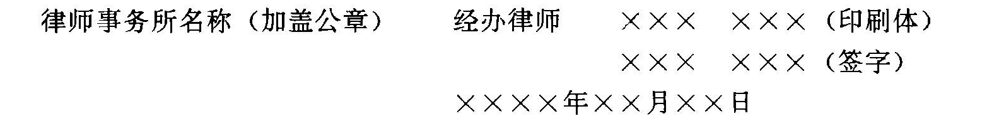

中国证券监督管理委员会
关于发布《公开发行股票公司信息披露的内容与格式准则第六号〈法律意见书的内容与格式〉（修订）》的通知
证监法律字〔1999〕2号
各证券监管办公室（直属办）、证券监管特派员办事处，上海、深圳证券交易所，上海、深圳证券监管专员办事处：
现发布《公开发行股票公司信息披露的内容与格式准则第六号〈法律意见书的内容与格式（修订）》，自1999年7月1日起施行。1994年10月28日中国证券监督管理委员会《关于发布〈公开发行股票公司信息披露的内容与格式准则第六号〉的通知》（证监发字〔1994〕62号）同时废止。
证券承销机构从事证券发行、配股承销业务，主承销商律师应当按照有关规定制作验证笔录，并向我会备案，在报送我会的申请材料时一并报送。
中国证券监督管理委员会
1999年6月15日
公开发行股票公司信息披露的内容与格式准则第6号——法律意见书的内容与格式
第一部分 基本要求
一、根据《中华人民共和国证券法》（以下简称《证券法》）、《中华人民共和国公司法》（以下简称《公司法》）的有关规定，制定本准则。发行人申请公开发行股票和上市（含配股，下同），其所聘请的律师应当按照本准则的要求，出具法律意见书。
二、法律意见书是发行人向中国证券监督管理委员会（以下简称“证监会”）申请公开发行股票所必须具备的法定文件之一。
三、律师应当严格履行法定职责，对发行人股票发行、上市的合法性及对发行、上市有重大影响的法律问题发表法律意见，保证法律意见书的真实性、准确性和完整性。
四、律师应当对出具法律意见书所依据的事实和材料进行核查和验证。若有过错，应承担相应的法律责任。
五、法律意见书不仅要表述结论性意见，而且应当说明得出上述结论性意见的依据。
六、律师出具法律意见书的内容与格式，应当符合本准则规定。本准则的某些具体规定确实不适用的律师可以根据实际情况对有关内容与格式作出适当修改，但应当说明修改的原因及理由。
七、本准则未明确要求，但对发行、上市有重大影响的法律问题，律师应当发表法律意见。
八、律师出具法律意见书，不应使用“基本符合条件”一类的措辞。对于不符合条件的事项或者律师已经勉尽责仍不能对其法律性质或其合法性作出准确判断的事项，应当发表保留意见。
九、律师可以要求发行人或相关当事人就特定事宜作出书面说明、确认或承诺；但无论有无书面说明、确认或承诺，律师仍受勤勉尽责义务的约束，不得出具有虚假、严重误导性内容或者有重大遗漏的法律见。
十、为了维护法律意见书的严肃性，律师应当在发行、上市申报材料正式上报时，方可签署法律意见书。法律意见书上报后，不得对该文本进行任何修改。如需要作出补充、说明或更正，应另行出具专项法律意见书。
报送证监会的法律意见书应当是经两名以上具有证券从业资格的律师及其所在的律师事务所签字、盖章的正式文本。
十一、发行申报材料上报后，如有任何修改，发行人必须立即通知律师。上述修改对法律意见有影响的，律师应当就该项修改的内容出具专项法律意见书。
十二、本准则适用于A股发行和上市，发行境内上市外资股，可参照本准则制作法律意见书。
十三、本准则由证监会负责解释。
十四、本准则自1999年7月1日起施行。1994年10月28日证监会《关于发布〈公开发行股票公司信息披露的内容与格式准则第六号〉的通知》（证监发字〔1994〕162号）同时废止。
第二部分 股票发行、上市法律意见书的内容与格式
第一节
XX律师事务所关于XX公司XX年
股票发行、上市的法律意见书
（引言）
一、出具法律意见书的依据
（一）说明根据《证券法》、《公司法》及国务院证券管理部门的有关规定出具法律意见书。
（二）说明根据发行人与律师事务所签订的《委托协议》出具法律意见书。
二、律师应当声明的事项
（一）说明是依据法律意见书出具日以前已经发生或存在的事实和我国现行法律、法规和规范性文件发表法律意见。
（二）律师已经对与出具法律意见书有关的所有文件资料及证言进行审查判断，并据此出具法律意见。
（三）说明已经按照本准则的要求对本次发行上市的合法性及对本次发行上市有重大影响的法律问题发表法律意见，法律意见书中不存在虚假、严重误导性陈述及重大遗漏，否则愿承担相应的法律责任。
（四）本法律意见书仅供发行人为本次股票发行、上市之目的使用，不得用作任何其他目的。
（五）律师同意将本法律意见书作为发行人申请公开发行股票及上市所必备的法定文件，随其他申报材料一起上报，并依法对其出具的法律意见承担责任。
三、引言的结束段应载入下列文字：
“本所律师根据《证券法》第十三条的要求，按照律师行业公认的业务标准、道德规范和勤勉尽责精神，对XX公司提供的有关文件和事实进行了核查和验证，现出具法律意见如下：”
（正文）
一、发行人发行股票的主体资格
（一）企业改组设立公司发行
1、说明发行人的重组行为是否符合现行法律、法规、规章和其他规范性文件的要求；
2、说明发起人作为一方当事人的合同、协议及其他使其财产或者行为受约束的文件是否有导致发行人设立不成或使设立行为存在潜在纠纷的法律障碍；
3、说明拟投入或已投入股份公司资产的产权隶属关系及将上述资产投入股份公司是否存在法律障碍；
4、若发起人以其全资附属企业的资产折价入股的，说明发起人是否已通过履行必要的法律程序取得了上述资产的所有权；若上述折价入股行为导致全资附属企业注册资本减少或偿债能力降低的，说明是否已征得相关债权人同意；若上述折价入股行为导致全资附属企业解散的，说明对其原有债务的处置是否合法；
5、若发起人以其在合资或联营等企业中的权益折价入股的，说明是否已征得该企业其他出资人的同意；
6、说明因发行人的设立而引起的原企业债务的处理是否已征得大额债权人的同意，是否存在金额较大的潜在债务纠纷；
7、说明有关财产所有权、使用权由发起人转移给发行人是否存在法律障碍；
8、说明发行人是否已具备本次发行上市的主体资格。
（二）原定向募集公司增资发行
1、说明发行人的设立是否符合当时法律、法规和规范性文件的规定，是否已依据《公司法》进行规范；
2、说明发行人作为一方当事人的合同、协议及其他使其财产或者行为受约束的文件是否有导致发行人无法增资扩股的法律障碍；
3、说明发行人设立至今有无合并、分立、增资扩股、减少注册资本、收购兼并等行为，若有，说明是否符合当时法律、法规、规范性文件的规定，是否已履行必要的法律手续；
4、说明发行人是否依法有效存续，即根据法律、法规及其章程说明发行人是否有需要终止的情形出现；
5、说明发行人是否已具备本次发行上市的主体资格。
（三）有限责任公司变更为股份有限公司后增资发行
1、说明发行人是否为依法设立的有限责任公司；
2、说明发行人的章程及作为一方当事人的合同、协议及其他使其财产或行为受约束的文件是否有导致公司无法变更为股份公司的法律障碍；
3、说明发行人设立至今有无合并、分立、增加或减少注册资本、收购兼并等行为，若有，说明是否符合当时法律、法规、规范性文件的规定，是否已履行必要的法律手续；
4、说明发行人是否已依法变更为股份有限公司；
5、说明发行人是否依法有效存续，即根据法律、法规及其章程说明发行人是否有需要终止的情形出现；
6、说明发行人是否已具备本次发行上市的主体资格。
（四）上市公司向社会公开增资发行
1、说明公司有无合并、分立、增资扩股、减少注册资本、收购兼并、资产置换等行为，若有，说明是否符合当时法律、法规、规范性文件的规定，是否已履行必要的法律手续；
2、说明公司是否依法有效存续，即根据法律、法规及其章程说明发行人是否有需要终止的情形出现；
3、说明发行人是否已具备本次发行上市的主体资格。
二、本次发行、上市的授权和批准
（一）说明股东大会、发起人会议是否已经依法定程序合法有效地作出批准发行、上市的决议。
（二）根据法律、法规、公司章程或者发起人协议等文件，说明上述决议的内容是否合法有效。
（三）如果股东大会、发起人会议授权董事会或筹委会办理有关发行上市事宜，说明上述授权是否合法有效。
三、本次发行、上市的实质条件
分别就不同类别的公司，对照《证券法》、《公司法》及其他规范性文件的规定，说明是否符合发行、上市条件（涉及资产评估、审计报告、盈利预测等内容时，应当说明是严格按照有关中介机构出具的报告引述）。某些条件只有等到发行后才能明确的，律师可以不发表法律意见。
四、发行人的章程或章程草案
（一）说明发行人的章程或章程草案是否经公司股东大会或发起人会议审议，是否合法有效通过。
（二）说明发行人的章程或章程草案的内容是否符合现行法律、法规的规定。
（三）说明发行人的章程或章程草案是否按《上市公司章程指引》修订或起草。对《上市公司章程指引》的内容进行删除或修改的，说明修改的理由。发行人已在香港或境外上市的，说明章程是否符合《到境外上市公司章程必备条款》的有关规定。
五、关联交易及同业竞争
（一）说明发行人有哪些关联企业。
（二）说明发行人与关联企业间是否存在关联交易，若存在关联交易，还需说明关联交易的内容、数量和金额。
（三）说明关联交易是否存在损害发行人及其股东利益的内容。
（四）若关联交易的一方是公司大股东，还需说明是否已采取必要措施对小股东的利益进行保护。
（五）说明发行人与关联企业间是否存在同业竞争。若存在同业竞争，还需说明是否已采取必要措施解决同业竞争。
（六）说明是否对关联交易和同业竞争进行充分披露。
六、发行人的主要财产
（一）说明发行人拥有的房产、土地使用权、知识产权及其他无形资产的数量及上述财产是否存在产权纠纷。
（二）说明发行人以何种方式取得上述财产的所有权或使用权，是否已取得完备的权属证书，若未取得，还需说明取得是否存在法律障碍。
（三）说明发行人对其主要财产的所有权或使用权的行使有无限制，如是否存在担保或者其他债务关系。
七、发行人的重大债权、债务关系
（一）说明发行人将要履行、正在履行以及虽已履行完毕但可能存在潜在纠纷的重大合同的主要内容。
（二）说明上述合同是否合法有效，是否存在潜在纠纷。
（三）说明上述合同的主体是否变更为或拟变更为发行人，若未履行变更程序，是否已经获得合同他方的同意，合同履行是否存在法律障碍。
（四）说明发行人是否有因环境保护、知识产权、产品质量、劳动安全、人身权等原因产生的侵权之债。
（五）说明发行人与股东之间是否存在重大债权债务关系及相互提供担保的情况。
（六）说明发行人金额较大的其他应收、应付款是否因正常的生产经营活动发生，是否合法有效。
八、发行人的环境保护和产品质量标准
（一）说明发行人的生产经营活动是否符合有关环境保护的要求。近三年来，是否因违反环境保护方面的法律、法规而被处罚。
（二）说明发行人的产品是否符合有关产品质量和技术监督标准。近三年来，是否因违反有关产品质量和技术监督方面的法律法规而被处罚。
九、董事、监事等高级管理人员
说明发行人的董事、监事等高级管理人员的任职是否符合法律、法规以及《公司章程》的规定，并说明其任期。
十、诉讼、仲裁或行政处罚
（一）说明发行人及其发起人是否有尚未了结的或者可预见的重大诉讼、仲裁及行政处罚案件。
（二）如上述案件存在，还应对案件的简要情况作出说明（包括但不限于受理该案件的法院名称、提起诉讼的日期、诉讼的当事人和代理人、案由、诉讼请求、可能出现的处理结果或已生效法律文书的执行情况等）。
（三）说明上述案件对本次发行、上市的影响。
十一、发行人的税务问题
（一）说明发行人执行的税种、税率是否符合现行法律、法规及规范性文件的要求。
（二）说明发行人近三年是否依法纳税，是否被税务部门处罚的情形。
十二、发行人募股资金的运用
（一）说明发行人募股资金用于哪些项目；
（二）若上述项目涉及与他人进行合作的，应说明合作方式及是否已订立相关的合同、协议及取得有关部门的批准；
（三）如发行人是增资发行的，需说明前次募集资金的使用是否与原募集计划一致。如果发行人改变前次募集资金的用途，应当说明该改变是否依法定程序获得批准。
十三、发行人的收购兼并
（一）说明发行人是否准备收购兼并其他企业；
（二）说明收购兼并的方式及其法律依据；
（三）说明上述收购兼并行为是否履行了必要的法律手续。
十四、律师认为需要说明的其他问题
本准则未明确要求，但对发行上市有重大影响的法律问题，律师应当发表法律意见。
十五、结论意见
概括说明对本次股票发行、上市的意见，即对本次发行、上市的合法性给予总括确认。
律师已经勤勉尽责仍不能对本次发行、上市的合法性作总结确认的，应当发表保留意见，并说明对本次发行、上市的影响程度。
（结尾）
一、法律意见书的日期及签字盖章
二、法律意见书的正、副本份数

第二节
上市公司配股法律意见书的内容与格式
XX律师事务所关于XX公司XX年
配股的法律意见书
（引言）
一、 出具法律意见书的依据
（一）说明根据《证券法》、《公司法》及国务院证券管理部门关于上市公司配股的规定出具法律意见书。
（二） 说明根据发行人与律师事务所签订的《委托协议》出具法律意见书。
二、律师应当声明的事项
（一）说明是根据法律意见书出具日以前已经发生或存在的事实和我国现行法律、法规和规范性文件发表法律意见。
（二）律师已经对与出具法律意见书有关的所有的文件资料及证言进行审查判断，并据此出具法律意见。
（三）说明已经按照本准则的要求对本次发行上市的合法性及对本次发行上市有重大影响的法律问题发表法律意见，法律意见书中不存在虚假、严重误导性陈述及重大遗漏，否则愿承担相应的法律责任。
（四）本法律意见书仅供发行人为该次股票发行、上市之目的使用，不得用作任何其他目的。
（五）律师同意将本法律意见书作为发行人本次配股所必备的法定文件，随其他申报材料一起上报，并依法对其出具的法律意见承担责任。
三、引言的结束段应载入下列文字：
“本所律师根据《证券法》第十三条的要求，按照律师行业公认的业务标准、道德规范和勤勉尽责神，对XX公司提供的上述文件和有关事实进行了核查和验证，现出具法律意见如下：”
（正文）
一、发行人发行股票的主体资格
（一）说明发行人是否为其股票已经依法在国务院证券管理部门批准的证券交易所交易的股份有限公司。
（二）说明发行人是否依法有效存续。即根据法律、法规及其章程，说明发行人是否有需要终止的情形出现。
（三）说明发行人章程的内容是否符合现行法律、法规的规定，是否按《上市公司章程指引》修订。
二、本次配股、上市的授权和批准
（一）说明公司本次配股是否按照公司章程和有关配股规定的程序作出决议。
（二）说明本次配股已经依法取得或者尚待取得有权部门同意发行、上市的许可事项。
三、本次发行、上市的实质条件
（一）逐项说明本次配股是否符合《证券法》、《公司法》以及国务院证券管理部门关于公司配股的具体规定。
（二）如股东以实物资产或者其他非现金资产作价抵作股款，说明此类资产是否已取得完备的权属证书，此种行为的实施是否存在法律障碍。
（三）说明各股东在配售过程中是否受到公平对待。
四、说明本次配股所涉及的关联交易及同业竞争
（一）说明发行人有哪些关联企业。
（二）说明发行人与其关联企业在本次配股中是否存在关联交易，若存在关联交易，还需说明关联交易的内容、数量和金额。
（三）说明这种关联交易是否会损害发行人及其股东的利益。
（四）若关联交易一方是公司大股东，还需说明是否已采取必要措施对小股东的利益进行保护。
（五）说明股东大会关于本次配股涉及的关联交易的表决程序是否符合法律、法规和《公司章程》的规定。
（六）说明发行人本次配股涉及的关联企业间是否存在同业竞争。若存在同业竞争，还需说明是否已采取必要措施解决同业竞争。
（七）说明是否对关联交易和同业竞争进行充分披露。
五、发行人募股资金的运用
（一）说明发行人前次募集资金的使用是否与原募集计划一致。如果发行人改变前次募集资金的用途，应当说明该改变是否依法定程序获得批准。
（二）说明发行人本次募股所筹资金的使用是否需要得到有权部门要求的批准或授权；如需要，是否已经得到批准或者授权。
（三）如果本次募集资金的运用涉及兼并、收购其他企业的，说明兼并、收购的方式及其法律性质，并说明是否存在法律障碍、是否存在法律纠纷。
六、本次配股所涉及到的重大债权、债务关系
（一）审查本次配股涉及的重大合同的合法性。
（二）说明发行人在上述合同项下的义务对本次配股是否构成法律障碍。
（三）说明发行人与股东之间是否存在重大债权债务关系及相互提供担保的情况。
（四）说明发行人正在进行或将要进行的重大诉讼、仲裁或行政诉讼事项，并说明对本次配股是否构成法律障碍。
七、发行人的税务问题
（一）说明发行人执行的税种、税率是否符合现行法律、法规及规范性文件的要求。
（二）说明发行人近三年是否依法纳税，是否被税务部门处罚的情形。
八、董事、监事等高级管理人员
说明发行人的董事、监事等高级管理人员的任职是否符合法律、法规以及《公司章程》的规定，并说明其任期。
九、律师认为需要说明的其他问题
本准则未明确要求，但对配股有重大影响的法律问题，律师应当发表法律意见。
十、结论意见
概括说明对本次配股的意见，即对本次配股的合法性给予总括确认。
律师已经勤勉尽责仍不能对本次配股的合法性作总括确认的，应当发表保留意见，并说明对本次配股的影响程度。
（结尾）
一、法律意见书的日期及签字、盖章
二、法律意见书的正、副本份数
第三部分 关于制作法律意见书工作底稿的说明
一、具有证券法律业务资格的律师事务所（以下简称“律师事务所”）及具有证券法律业务资格的律师（以下简称“律师”）制作股票发行、上市（含配股，以下同）的法律意见书时，必须同时制作工作底稿。
工作底稿是指律师在为股票发行人制作法律意见书的过程中形成的工作记录和获取的资料。
二、工作底稿应当就《法律意见书》中涉及的每一法律意见所依据的事实、法律及律师的判断，作出详尽、完整的阐述。
三、工作底稿包括以下内容：
（一）律师承担项目的基本情况，包括委托单位名称、项目名称、制作项目的时间或期间、工作量统计。
（二）为出具法律意见书制订的工作计划及其操作程序的记录。
（三）与发行人（包括发起人）的历史沿革、设立有关的资料，如设立批准证书、营业执照、合同、协议、章程等文件或变更文件的复制件。
（四）重大合同、协议及其他重要法律文件和会议记录的摘录或副本。
（五）与发行人及相关人员相互沟通情况的记录、对发行人提供的资料的查验、调查访问记录、往来函件、现场勘查记录、查阅文件清单等相关的资料及详细说明。
（六）发行人及相关人员的书面保证或声明书的复制件。
（七）对保留意见或疑难问题所作的说明。
（八）其他与出具法律意见书相关的重要资料。
上述材料应当注明来源。凡涉及律师向有关当事人调查所作的记录，须由当事人及律师本人签字。
四、工作底稿应当内容完整、记录清晰、结论明确，并标明索引编号及顺序编号。
五、工作底稿应当是经二名以上律师及其所在律师事务所签字盖章的正式文本。
六、工作底稿由制作人所在律师事务所保存。中国证监会根据需要可以随时调阅、检查工作底稿，有关律师及律师事务所应当及时提供。
律师事务所应当按照档案管理的有关规定，妥善保存工作底稿及相关资料，保存期限至少七年。
七、工作底稿是判断律师是否勤勉尽责的重要依据，律师应当及时、准确、真实地制作。
八、凡律师不制作或不如实制作工作底稿、律师事务所不妥善保存或不如实提供工作底稿的，应当承担相应的责任。